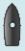
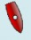
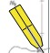

GPS Setup & Status
GPS Setup

GPS Status
The default Ownship icon is rendered as grey if there is no valid gps position fix available and like this when a gps fix is available 
The GPS status is also indicated all the way to the right along the top of the screen, together with the North Up/ Course Up Indicator, unless this position is covered by the floating ToolBar. The GPS status is then found bottom left.
This windows visibility is user settable in Options→User Interface→ Show Compass/GPS Status Window. Short cut “Ctrl-I“
The GPS Status Icons should be interpreted as follows:
 No GPS data at all, or position not available.
No GPS data at all, or position not available.
 GPS fix, the position is known and received from the GPS. Signal is frequent enough and good for navigation, satellite count is not available in the data feed .
GPS fix, the position is known and received from the GPS. Signal is frequent enough and good for navigation, satellite count is not available in the data feed .
 Active/Valid GPS data + GPS reporting 1 - 4 satellites. Only if satellite count is available from GPS receiver.
Active/Valid GPS data + GPS reporting 1 - 4 satellites. Only if satellite count is available from GPS receiver.
 Active/Valid GPS data + GPS reporting 5 - 9 satellites. Only if satellite count is available from GPS receiver.
Active/Valid GPS data + GPS reporting 5 - 9 satellites. Only if satellite count is available from GPS receiver.
 Active/Valid GPS data + GPS reporting 10+ satellites. Only if satellite count is available from GPS receiver.
Active/Valid GPS data + GPS reporting 10+ satellites. Only if satellite count is available from GPS receiver.
Ball: A Ball could be 1,2 or 3 bars, the number of satellites is unknown because the GSV sentence may be unavailable. There is a good fix, the ball just means we get the position often enough. We know a good GPS fix requires a minimum of 4 satellites to resolve the four unknowns X,Y,Z (spatial) and t (time). That is the minimum and one more satellite is better because it is likely to be more stable. The Ball may be using position data with more than 4 satellites available, but not showing any bars because the sentence is filtered out by your network or multiplex filters.
Bars: The GPS may also send data about the satellite constellations (its name/the PRN, azimuth and elevation for each of the sats). The GSV Sentence contains this information. If your network or multiplex filters the GSV sentences out, the only indicator showing will be the Green Ball.
- If there are many fluctuations in the number of bars, there might be problem with reception but there is no direct relation (such as many satellites = good quality). With more bars it is more probable that the fix is better (however there is no guarantee), and with more satellites the reception is more stable. Bars are interesting to watch in urban & treed environments, but for boating a minor issue in general. The bars are not better than the dot, the only difference really is they show we have data about the number of sats available.
- In real life, various gps receivers may behave slightly differently, especially when starting up and finding satellites. Five sats with a strong signal can give a better fix than ten at low elevation pinned on the horizon. Some modern designs of GPS chip sets disregard “low quality” sats and rely on few ones with optimal reception. What they will show in the GSV NMEA sentence - all sats in sight or just the ones used varies from manufacturer to manufacturer.
The small dialog, containing the GPS indicator and the Course Up / North Up indicator, can be toggled on/off with the “Ctrl+i” shortcut.
The GPS status, including available satellites, is also available as an instrument on the DashBoard.
GPS and low accuracy charts.
OpenCPN is checking loaded charts for accuracy as far as possible. If there is a problem with a chart, the chart info box that becomes visible when holding the cursor over the chart rectangle in the chart bar, will say ” Warning: Chart georef accuracy is poor.”

A visual warning is that Own Ship turns from Red to Yellow when receiving a gps signal.


First is a real scale vector version and then. the default OwnShip bitmap
There is no quick fix for a bad chart, but try to switch to another chart if using single mode chart display. If quilting is on, right-click on the chart button in the chart-bar and select “Hide this chart”. Both suggestions assumes that the bad chart can be replaced by other charts, which of course isn't always possible.